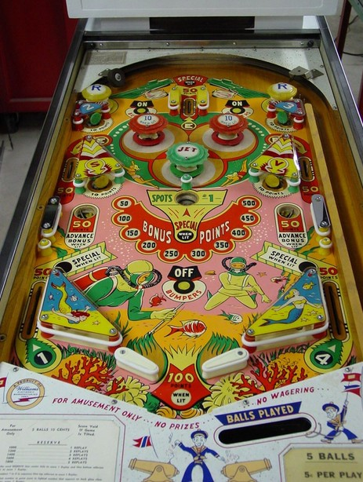

Goal #1 of the game is to spell Reserve. The Rs are the two passive bumpers at the top of the game; the three Es are the three rollover lanes, at the top center, middle left, and middle right; the S and V are the yellow standup targets near the side lanes. Making a lit bumper, target, or lane unlights it, collecting that letter. Spelling all of Reserve in any order lights the gobble hole for a Special and lights one out lane for Special alternating on 1-point switch hits.
Goal #2 of the game is to collect 1-2-3-4 in order. #1 is earned at the gobble hole or left out lane; #2 is the top left green standup target; #3 is the top right green standup target; #4 is the right out lane. Collecting 1-2-3-4 in order lights the top lane for Special and lights the drain for a 100-point end of ball bonus.
The saucers near the exits of the middle left and middle right side lanes score 50 points. One saucer is lit at a time, alternating on 1-point switch hits. Making the lit saucer adds 50 to the Bonus Points. the Bonus Points are only awarded when draining via the gobble hole in the middle of the game. The Bonus Points value is held from ball to ball and game to game, but reset to 50 points when earned, and maxes out at 500 points.
The green Jet bumper always scores 1 point. The red pop bumpers score 1 point or 10 when lit; they are lit by pressing either On Bumpers button at the top of the playfield, and unlit by the Off Bumpers button near the flippers. All standup targets score 10 points and all rollover lanes score 50. Slingshots score 1 point and there are no in lanes, center posts, kickbacks, or free ball gates. Tilt ends game.
The below picture of Reserve's playfield was taken from the Internet Pinball Database, where it was originally provided by John Glennon.
